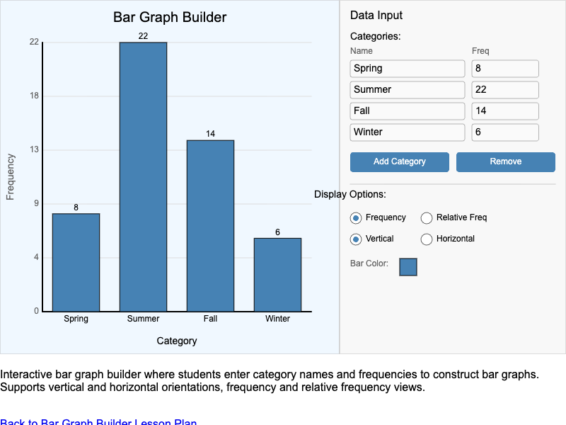
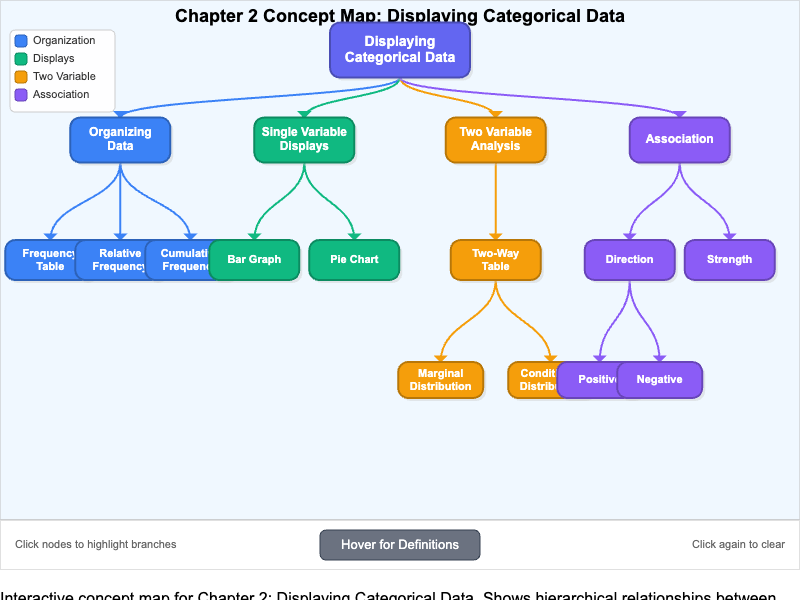
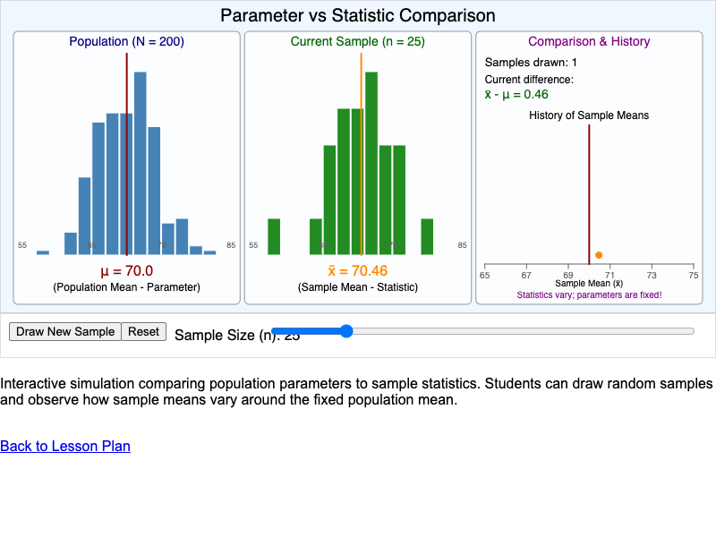
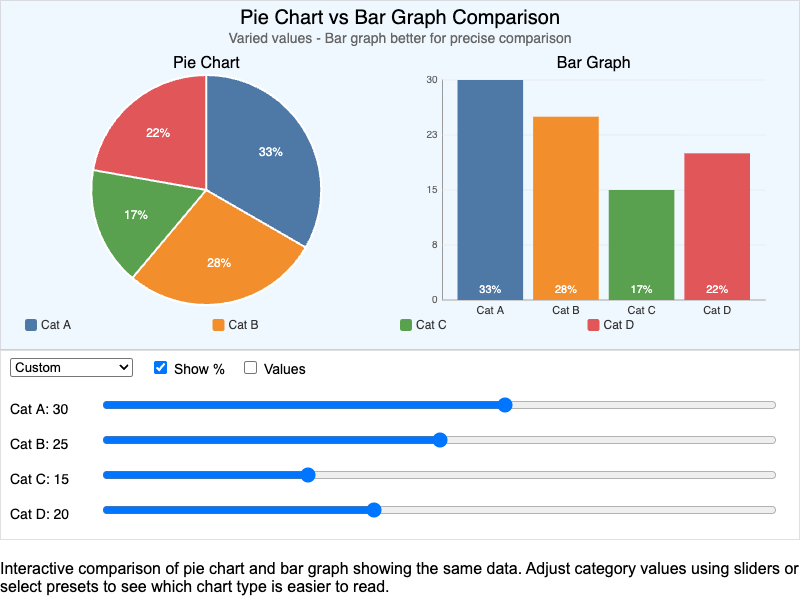
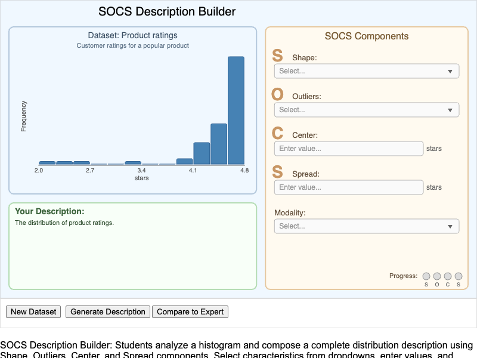
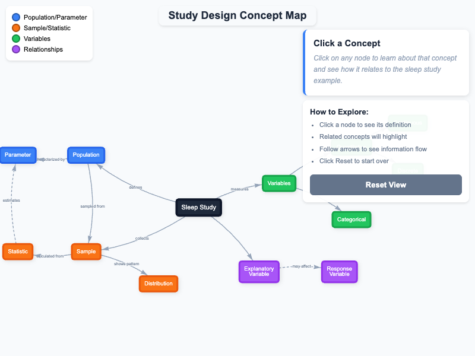
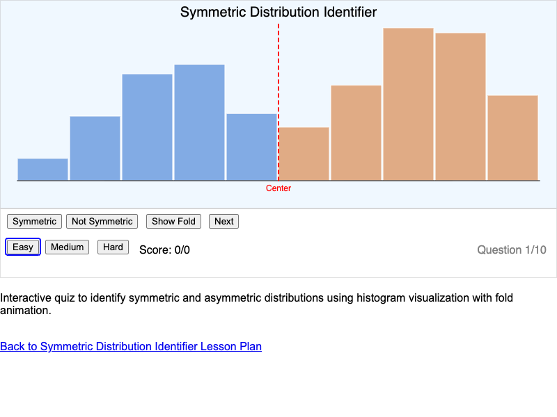
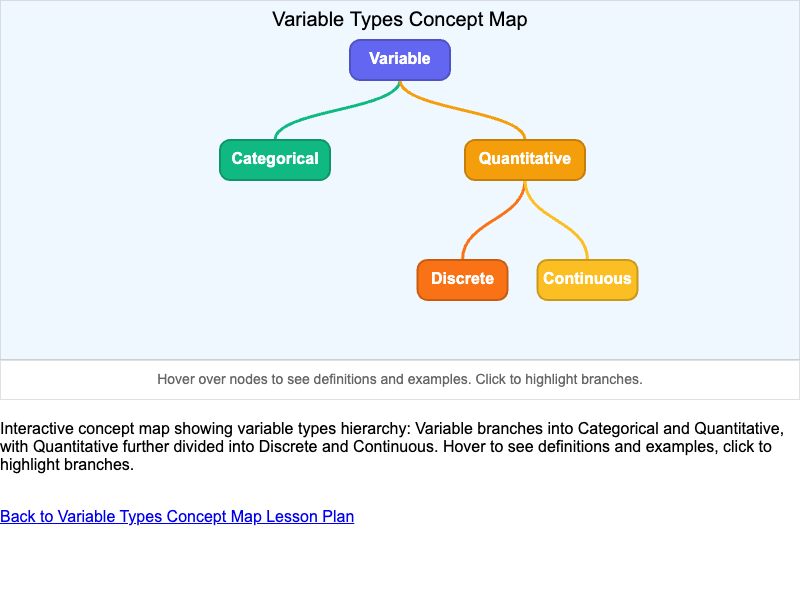

List of MicroSims for AP Statistics
Interactive Micro Simulations to help students learn statistics fundamentals through hands-on exploration.
-
Association Detector Visualization

Interactive MicroSim for comparing conditional distributions using side-by-side 100% stacked bar charts to identify evidence of association between categorical variables.
-

An interactive MicroSim that helps students classify associations between categorical variables as strong, moderate, weak, or none by visualizing two-way tables and segmented bar charts.
-

An interactive MicroSim where students construct bar graphs from categorical data by entering category names and frequencies, with options for vertical/horizontal orientation.
-

An interactive concept map showing the hierarchy of key concepts in Chapter 2, including Organizing Data, Single Variable Displays, Two Variable Analysis, and Association.
-
Discrete vs Continuous Number Line

An interactive MicroSim that helps students distinguish between discrete and continuous variables by visualizing how values can be plotted on a number line.
-

An interactive infographic showing three types of distribution shapes - unimodal, bimodal, and uniform - with real-world examples, hover tooltips, and a quiz mode.
-

An interactive MicroSim where students practice calculating relative frequencies and percentages from raw frequency data using adjustable sliders.
-

An interactive MicroSim where students click on a number line to add data points and construct a dotplot, demonstrating how dotplots visualize quantitative data.
-
Interactive Histogram Explorer

An interactive MicroSim where students examine how changing bin width affects histogram appearance, with multiple datasets and display options.
-

An interactive game where students identify outliers in real-world datasets by examining visual separation in dotplots and histograms.
-
Parameter vs Statistic Comparison

An interactive MicroSim demonstrating the difference between population parameters and sample statistics, showing how statistics vary while parameters remain fixed.
-
Pie Chart vs Bar Graph Comparison

An interactive MicroSim that displays the same data as both a pie chart and bar graph, helping students analyze when each visualization type is most effective.
-
Population and Sample Visualization

An interactive MicroSim that demonstrates the relationship between a population and a sample by letting students select individuals from a population.
-

Interactive MicroSim where students classify distributions as symmetric, skewed left, or skewed right by examining histograms with real-world contexts.
-

An interactive MicroSim where students compose complete distribution descriptions using the SOCS framework (Shape, Outliers, Center, Spread).
-

An interactive MicroSim where students interpret how data values decompose into stems and leaves to build a stemplot visualization.
-

Interactive concept map showing how foundational statistics concepts connect in the context of a real research study about sleep and academic performance.
-
Symmetric Distribution Identifier

An interactive quiz MicroSim where students learn to recognize symmetric and asymmetric distributions by comparing histogram shapes.
-

An interactive calculator for computing marginal and conditional distributions from a two-way (contingency) table with editable cells.
-

An interactive concept map showing the hierarchy of variable types in statistics, including categorical and quantitative variables.